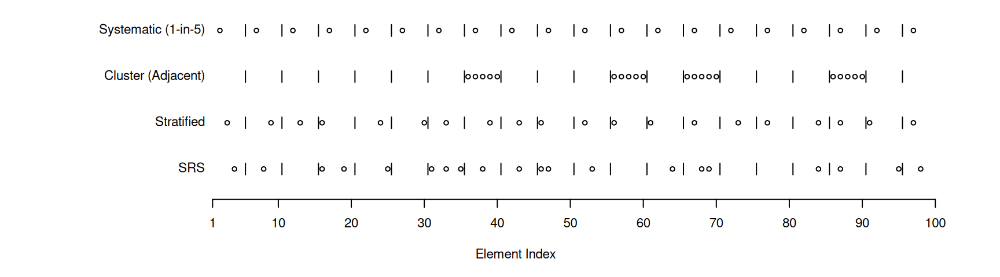
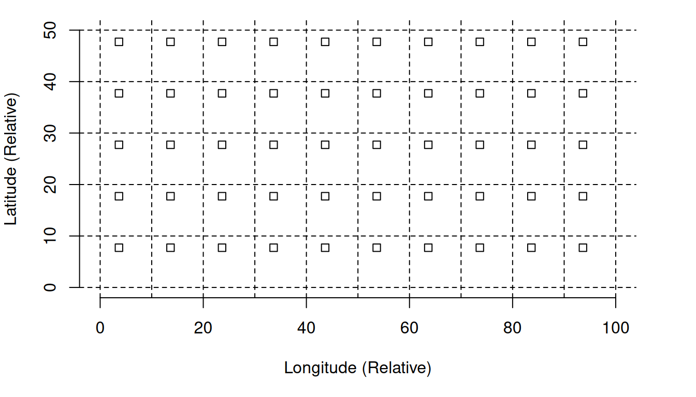
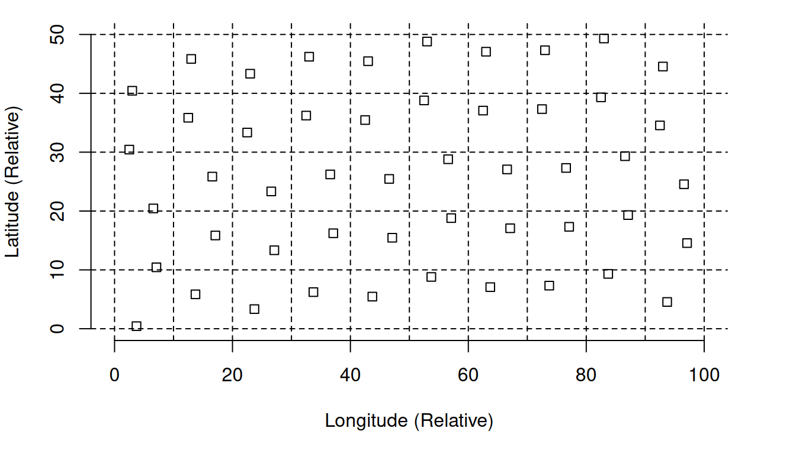
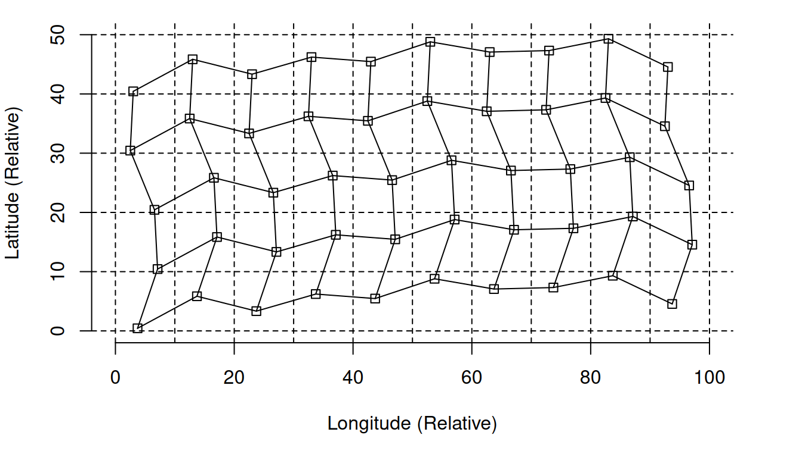
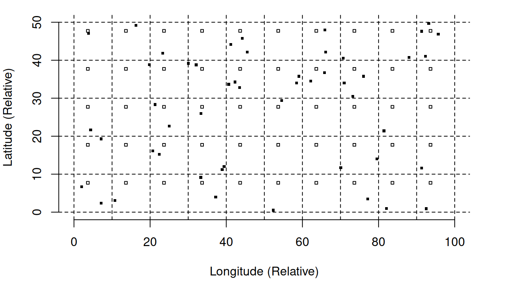
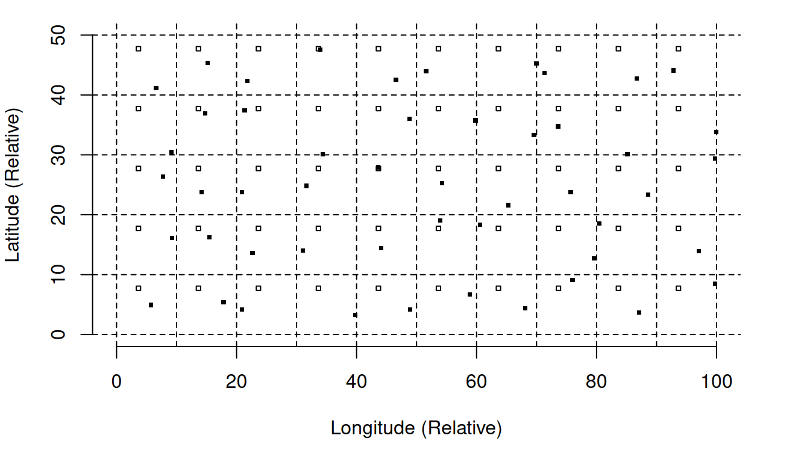
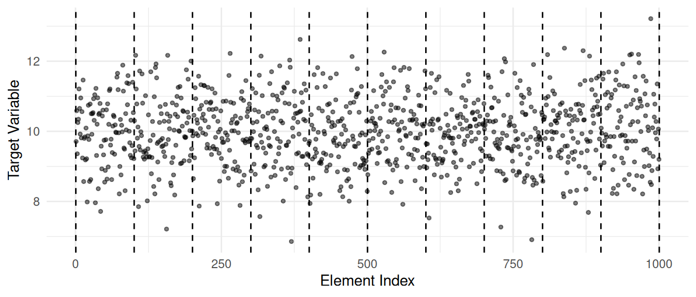
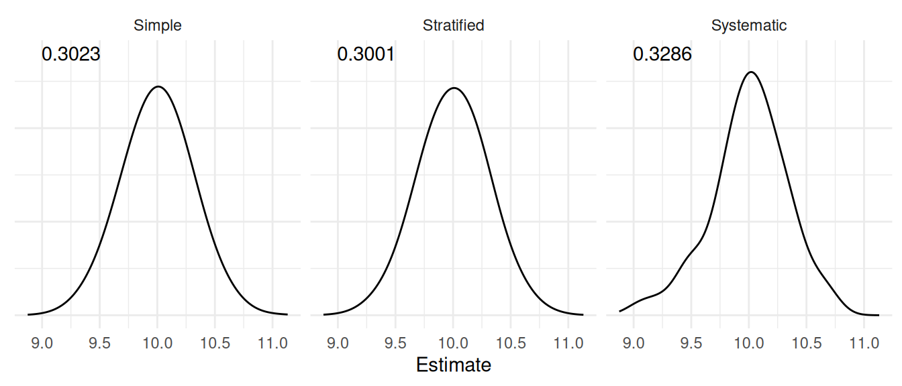
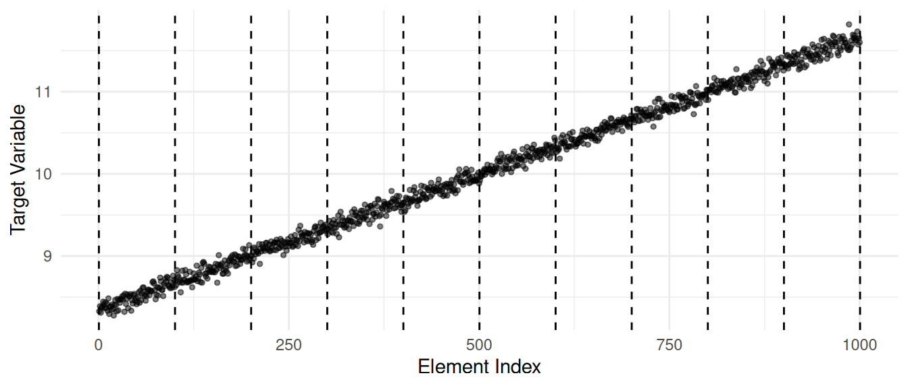
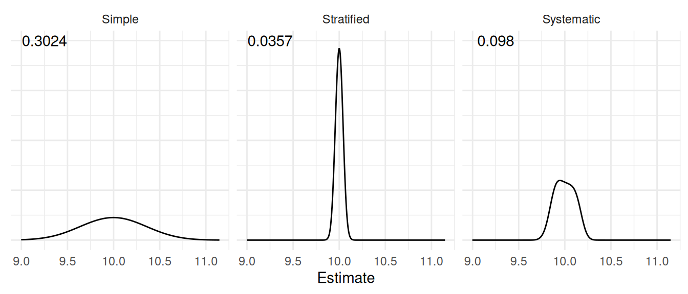

You can also download a PDF copy of this lecture.
Another complex sampling design is to combine stratified random sampling with cluster sampling to exploit the benefits of both designs.
| Element | Cluster | Stratum |
|---|---|---|
| student | classroom | grade level |
| tree | plot | elevation |
| household | block | city/suburb |
| store | city | region |
| minute | hour | day/night |
Systematic sampling is cluster sampling where the elements are assigned to clusters so that they are “systematically spread out” as opposed to close/adjacent (usually in space or time).
Suppose we have a population of \(M\) = 12 elements that can be ordered in, say, space or time. How might we put these elements into \(N\) = 4 clusters of \(m_i\) = 3 elements each?
It might be convenient to cluster adjacent elements.| Sampling Units | \(\mathcal{E}_{1}\) | \(\mathcal{E}_{2}\) | \(\mathcal{E}_{3}\) | \(\mathcal{E}_{4}\) | \(\mathcal{E}_{5}\) | \(\mathcal{E}_{6}\) | \(\mathcal{E}_{7}\) | \(\mathcal{E}_{8}\) | \(\mathcal{E}_{9}\) | \(\mathcal{E}_{10}\) | \(\mathcal{E}_{11}\) | \(\mathcal{E}_{12}\) |
|---|---|---|---|---|---|---|---|---|---|---|---|---|
| \(\mathcal{U}_{1}\) | \(\checkmark\) | \(\checkmark\) | \(\checkmark\) | |||||||||
| \(\mathcal{U}_{2}\) | \(\checkmark\) | \(\checkmark\) | \(\checkmark\) | |||||||||
| \(\mathcal{U}_{3}\) | \(\checkmark\) | \(\checkmark\) | \(\checkmark\) | |||||||||
| \(\mathcal{U}_{4}\) | \(\checkmark\) | \(\checkmark\) | \(\checkmark\) |
| Sampling Units | \(\mathcal{E}_{1}\) | \(\mathcal{E}_{2}\) | \(\mathcal{E}_{3}\) | \(\mathcal{E}_{4}\) | \(\mathcal{E}_{5}\) | \(\mathcal{E}_{6}\) | \(\mathcal{E}_{7}\) | \(\mathcal{E}_{8}\) | \(\mathcal{E}_{9}\) | \(\mathcal{E}_{10}\) | \(\mathcal{E}_{11}\) | \(\mathcal{E}_{12}\) |
|---|---|---|---|---|---|---|---|---|---|---|---|---|
| \(\mathcal{U}_{1}\) | \(\checkmark\) | \(\checkmark\) | \(\checkmark\) | |||||||||
| \(\mathcal{U}_{2}\) | \(\checkmark\) | \(\checkmark\) | \(\checkmark\) | |||||||||
| \(\mathcal{U}_{3}\) | \(\checkmark\) | \(\checkmark\) | \(\checkmark\) | |||||||||
| \(\mathcal{U}_{4}\) | \(\checkmark\) | \(\checkmark\) | \(\checkmark\) |
This is an example of a 1-in-4 (ordered) systematic sampling design.
Example: A 1-in-5 systematic sample with \(M\) = 15 elements. The population is \[ \mathcal{P} = \{ \mathcal{E}_1, \mathcal{E}_2, \mathcal{E}_3, \mathcal{E}_4, \mathcal{E}_5 \ | \ \mathcal{E}_6, \mathcal{E}_7, \mathcal{E}_8, \mathcal{E}_9, \mathcal{E}_{10} \ | \ \mathcal{E}_{11}, \mathcal{E}_{12}, \mathcal{E}_{13}, \mathcal{E}_{14}, \mathcal{E}_{15} \}, \] and the sampling units are \[\begin{align*} \mathcal{U}_1 & = \{\mathcal{E}_1,\mathcal{E}_6,\mathcal{E}_{11}\}, \\ \mathcal{U}_2 & = \{\mathcal{E}_2,\mathcal{E}_7,\mathcal{E}_{12}\}, \\ \mathcal{U}_3 & = \{\mathcal{E}_3,\mathcal{E}_8,\mathcal{E}_{13}\}, \\ \mathcal{U}_4 & = \{\mathcal{E}_4,\mathcal{E}_9,\mathcal{E}_{14}\}, \\ \mathcal{U}_5 & = \{\mathcal{E}_5,\mathcal{E}_{10},\mathcal{E}_{15}\}. \end{align*}\]
Example: A 1-in-3 systematic sample with \(M\) = 15 elements. The population is \[ \mathcal{P} = \{ \mathcal{E}_1, \mathcal{E}_2, \mathcal{E}_3 \ | \ \mathcal{E}_4, \mathcal{E}_5, \mathcal{E}_6 \ | \ \mathcal{E}_7, \mathcal{E}_8, \mathcal{E}_9 \ | \ \mathcal{E}_{10}, \mathcal{E}_{11}, \mathcal{E}_{12} \ | \ \mathcal{E}_{13}, \mathcal{E}_{14}, \mathcal{E}_{15} \}, \] and the sampling units are \[\begin{align*} \mathcal{U}_1 & = \{\mathcal{E}_1,\mathcal{E}_4,\mathcal{E}_7,\mathcal{E}_{10},\mathcal{E}_{13}\}, \\ \mathcal{U}_2 & = \{\mathcal{E}_2,\mathcal{E}_5,\mathcal{E}_8,\mathcal{E}_{11},\mathcal{E}_{14}\}, \\ \mathcal{U}_3 & = \{\mathcal{E}_3,\mathcal{E}_6,\mathcal{E}_9,\mathcal{E}_{12},\mathcal{E}_{15}\}. \end{align*}\]
Example: A 1-in-3 systematic sample with \(M\) = 14 elements. The population is \[ \mathcal{P} = \{ \mathcal{E}_1, \mathcal{E}_2, \mathcal{E}_3 \ | \ \mathcal{E}_4, \mathcal{E}_5, \mathcal{E}_6 \ | \ \mathcal{E}_7, \mathcal{E}_8, \mathcal{E}_9 \ | \ \mathcal{E}_{10}, \mathcal{E}_{11}, \mathcal{E}_{12} \ | \ \mathcal{E}_{13}, \mathcal{E}_{14} \}, \] and the sampling units are \[\begin{align*} \mathcal{U}_1 & = \{\mathcal{E}_1,\mathcal{E}_4,\mathcal{E}_7,\mathcal{E}_{10},\mathcal{E}_{13}\}, \\ \mathcal{U}_2 & = \{\mathcal{E}_2,\mathcal{E}_5,\mathcal{E}_8,\mathcal{E}_{11},\mathcal{E}_{14}\}, \\ \mathcal{U}_3 & = \{\mathcal{E}_3,\mathcal{E}_6,\mathcal{E}_9,\mathcal{E}_{12}\}. \end{align*}\]
How do we a sampling unit with ordered systematic sampling?
Why use systematic sampling?
Simple protocol (e.g., “observe every 10th customer/fish/minute”).
As in other cluster sampling designs, useful when there is no sampling frame.
Samples can be more representative, leading to lower variance than cluster sampling with adjacent elements and simple random sampling.
Example: Consider four designs for selecting 20 elements out of 100.





Example: Consider the following populations of 1000 ordered elements and three different designs.
Simple random sampling.
Stratified random sampling by treating groups of 100 adjacent elements as strata.
1-in-100 ordered systematic sampling.
In each case 10 elements were selected and averaged to estimate \(\mu\).


 Note: The numbers shown in each plot are the standard errors (i.e., the square root of the variance of the estimator).